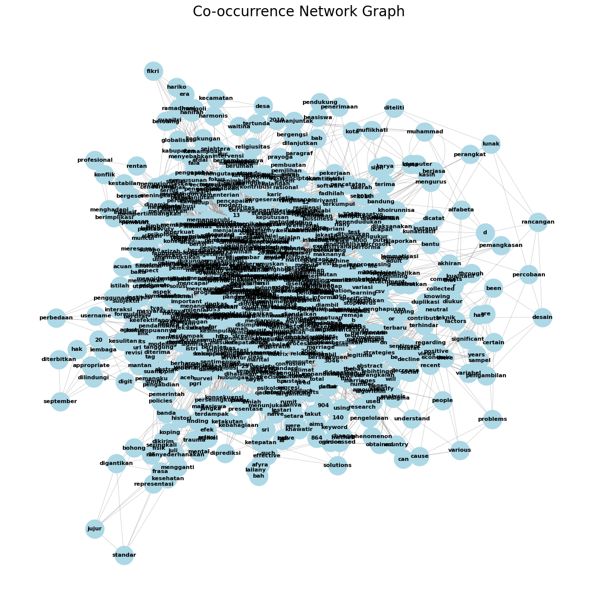
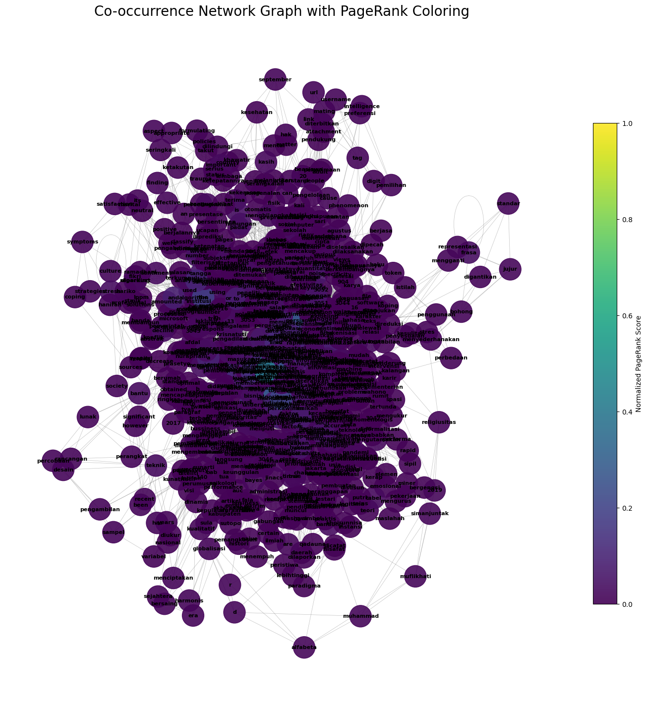

WORD GRAPH#
pip install --upgrade pymupdf
Collecting pymupdf
Downloading pymupdf-1.26.6-cp310-abi3-manylinux_2_28_x86_64.whl.metadata (3.4 kB)
Downloading pymupdf-1.26.6-cp310-abi3-manylinux_2_28_x86_64.whl (24.1 MB)
━━━━━━━━━━━━━━━━━━━━━━━━━━━━━━━━━━━━━━━━ 24.1/24.1 MB 46.4 MB/s eta 0:00:00
?25hInstalling collected packages: pymupdf
Successfully installed pymupdf-1.26.6
%cd /content/drive/MyDrive/PPW
[Errno 2] No such file or directory: '/content/drive/MyDrive/PPW'
/content
import pymupdf
doc = pymupdf.open("main.pdf") # open a document
out = open("output.txt", "wb") # create a text output
for page in doc: # iterate the document pages
text = page.get_text().encode("utf8") # get plain text (is in UTF-8)
out.write(text) # write text of page
out.write(bytes((12,))) # write page delimiter (form feed 0x0C)
out.close()
%%capture
!pip install nltk
import nltk
nltk.download('punkt') # hanya perlu sekali
nltk.download('punkt_tab') # opsional, untuk versi terbaru NLTK (≥3.8.2)
[nltk_data] Downloading package punkt to /root/nltk_data...
[nltk_data] Unzipping tokenizers/punkt.zip.
[nltk_data] Downloading package punkt_tab to /root/nltk_data...
[nltk_data] Unzipping tokenizers/punkt_tab.zip.
True
with open('output.txt', 'r', encoding='utf-8') as file:
teks = file.read()
print(teks[:200]) # tampilkan 200 karakter pertama
3043
Jurnal Indonesia : Manajemen Informatika dan Komunikasi (JIMIK)
Vol. 5 No. 3 (2024)
https://journal.stmiki.ac.id
E-
P-
Analisis Sentimen Publik Terhadap Pen
# Install: pip install nltk
import nltk
sentences = nltk.sent_tokenize(teks)
print(sentences)
['3043 \nJurnal Indonesia : Manajemen Informatika dan Komunikasi (JIMIK) \n Vol.', '5 No.', '3 (2024) \n \n \n \n \n \n \n \n \n \n \n \n \n \nhttps://journal.stmiki.ac.id \nE-\n P-\n \n \n \nAnalisis Sentimen Publik Terhadap Penurunan Jumlah \nPernikahan di Indonesia menggunakan Algoritma K-Nearest \nNeighbors (KNN) \n \nAfyra Ar’bah Lailany 1, Sri Lestari 2* \n \n1,2* Program Studi Sistem Informasi, Sekolah Tinggi Ilmu Komputer Cipta Karya Informatika, Kota Jakarta \nTimur, Daerah Khusus Ibukota Jakarta, Indonesia.', 'Email: afyraarbah@gmail.com 1, sri.lestari1203@gmail.com 2* \n \nHistori Artikel: \nDikirim 25 Juli 2024; Diterima dalam bentuk revisi 10 Agustus 2024; Diterima 20 Agustus 2024; Diterbitkan 20 \nSeptember 2024.', 'Semua hak dilindungi oleh Lembaga Penelitian dan Pengabdian Masyarakat (LPPM) STMIK \nIndonesia Banda Aceh.', 'Abstrak \nPernikahan di Indonesia adalah aspek penting dalam budaya dan masyarakatnya.', 'Namun, dalam beberapa tahun \nterakhir, telah terjadi penurunan signifikan dalam jumlah pernikahan di negara ini.', 'Untuk memahami pandangan \nmasyarakat terhadap fenomena ini, penelitian ini bertujuan untuk melakukan Analisis Sentimen terhadap \nPenurunan Jumlah Pernikahan di Indonesia.', 'Penurunan jumlah pernikahan dapat menimbulkan berbagai \nmasalah dan ekonomi.', 'Adanya faktor-faktor tertentu yang berkontribusi pada perubahan ini, seperti pergeseran \nnilai-nilai atau faktor ekonomi.', 'Mengetahui pandangan terhadap hal ini penting untuk merumuskan kebijakan \nyang sesuai dan mencari solusi yang efektif.', 'Metode yang digunakan dalam penelitian ini adalah analisis \nmenggunakan algoritma K-Nearest Neighbors (KNN).', 'Data akan dikumpulkan melalui komentar dihalaman \nmedia sosial Tiktok.', 'Data opini yang diperoleh akan diolah menggunakan algoritma KNN untuk \nmengklasifikasikan sentimen positif, negatif, atau netral terkait penurunan jumlah pernikahan.', 'Data yang \ndigunakan berjumlah 2.000 data, dan diolah menggunakan metode CRISP-DM.', 'Kata Kunci: Data Mining; Pernikahan; K-Nearest Neighbors; Tiktok.', 'Abstract \nMarriage in Indonesia is an important aspect of its culture and society.', 'However, in recent years, there has been \na significant decline in the number of marriages in the country.', "To understand people's views on this \nphenomenon, this research aims to conduct a sentiment analysis regarding the decline in the number of \nmarriages in Indonesia.", 'A decrease in the number of marriages can cause various economic problems.', 'There \nare certain factors that contribute to this change, such as shifts in values or economic factors.', 'Knowing views \non this matter is important for formulating appropriate policies and finding effective solutions.', 'The method \nused in this research is analysis using the K-Nearest Neighbors (KNN) algorithm.', 'Data will be collected through \ncomments on Tiktok social media pages.', 'The opinion data obtained will be processed using the KNN algorithm \nto classify positive, negative or neutral sentiment regarding the decline in the number of marriages.', 'The data \nused amounted to 2,000 data, and were processed using the CRISP-DM method.', 'Keyword: Data Mining; Marriage; K-Nearest Neighbors; Tiktok.', '3044 \nJurnal Indonesia : Manajemen Informatika dan Komunikasi (JIMIK) \n Vol.', '5 No.', '3 (2024) \n \n \n \n \n \n \n \n \n \n \n \n \n \nhttps://journal.stmiki.ac.id \nE-\n P-\n \n \n \n1.', 'Pendahuluan \n \nPernikahan sebagai institusi sosial yang mendasar tidak hanya mencerminkan hubungan antara \ndua individu, tetapi juga memiliki dampak signifikan pada struktur sosial, keberlanjutan keluarga, dan \nkesejahteraan masyarakat secara keseluruhan.', 'Dalam perspektif administrasi kependudukan, \npernikahan merupakan peristiwa kehidupan yang harus dilaporkan dan dicatat oleh instansi terkait \nyang mengurus pencatatan sipil dan kependudukan (Setia Ningtias, 2022).', 'Pencatatan pernikahan \ntidak hanya penting bagi individu yang menikah tetapi juga menjadi dasar bagi penyusunan kebijakan \nsosial yang berkelanjutan di Indonesia.', 'Dalam beberapa tahun terakhir, terjadi peningkatan jumlah \nperceraian yang secara langsung berdampak pada penurunan jumlah pernikahan.', 'Berdasarkan data \nresmi dari Kementerian Agama, pada tahun 2023 tercatat 463.654 kasus perceraian (Rahmananda et \nal., 2022).', 'Perceraian ini tidak hanya memisahkan dua individu, tetapi juga membawa berbagai \nkonsekuensi sosial, khususnya bagi anak-anak yang terdampak.', 'Anak-anak dari keluarga yang bercerai \nsering kali merasa khawatir tentang masa depan hubungan mereka sendiri, karena takut bahwa rumah \ntangga yang akan mereka bangun di masa depan mungkin akan mengalami hal yang sama (Astana et \nal., 2023).', 'Selain itu, bagi perempuan yang bercerai akibat kekerasan dalam rumah tangga atau \nperselingkuhan, seringkali ada rasa trauma dan ketakutan untuk memulai hubungan baru (Anwar et \nal., 2020).', 'Perubahan prioritas hidup masyarakat juga menjadi faktor utama dalam penurunan jumlah \npernikahan.', 'Banyak individu merasa bahwa pernikahan membawa tanggung jawab yang besar, baik \nsecara finansial maupun emosional.', 'Sebagian masyarakat bahkan beranggapan bahwa prioritas utama \ndalam hidup mereka bukanlah pernikahan, melainkan pengembangan karier.', 'Peran perempuan dalam \nmasyarakat modern juga telah mengalami perubahan besar.', 'Banyak perempuan yang memilih untuk \nfokus pada pencapaian karier dan stabilitas ekonomi sebelum memutuskan untuk menikah (Fitra et \nal., 2023).', 'Dalam konteks masyarakat yang semakin kompetitif, perempuan kerap mengutamakan \npekerjaan bergengsi, sehingga keputusan untuk menikah tertunda.', 'Hal ini menyebabkan fokus \nmasyarakat bergeser ke peningkatan kualitas hidup pribadi daripada memulai kehidupan berumah \ntangga.', 'Penelitian ini relevan untuk memahami persepsi masyarakat terkait penurunan jumlah pernikahan \ndi Indonesia.', 'Penelitian menggunakan algoritma K-Nearest Neighbors (KNN), salah satu algoritma \ndalam machine learning yang umum digunakan dalam klasifikasi data dan regresi.', 'Algoritma KNN \nefektif dalam menangani data non-linier dan kompleks, serta mudah diimplementasikan (Primartha, \n2021).', 'Keunggulan algoritma ini memungkinkan pengelompokan persepsi masyarakat terkait \nfenomena penurunan pernikahan.', 'Analisis sentimen memainkan peran penting dalam \nmengidentifikasi bagaimana masyarakat merespons tren ini, baik melalui media sosial maupun survei.', 'Sentimen masyarakat yang diungkapkan melalui berbagai platform memberikan gambaran faktor-\nfaktor yang mempengaruhi keputusan seseorang untuk menikah atau tidak.', 'Pemahaman ini dapat \nmenjadi masukan berharga bagi pemerintah dan pemangku kebijakan dalam merancang program yang \nmendukung stabilitas pernikahan dan keluarga.', 'Penelitian ini diharapkan dapat memberikan kontribusi pada pengembangan kebijakan yang \nbertujuan meningkatkan kualitas pernikahan dan stabilitas keluarga di Indonesia.', 'Hal ini sejalan \ndengan visi pembangunan nasional untuk menciptakan masyarakat yang sejahtera, harmonis, dan \nmampu bersaing dalam era globalisasi yang semakin dinamis.', 'Algoritma KNN digunakan untuk \nmengelompokkan pola umum dalam persepsi publik terkait penurunan jumlah pernikahan, dan \nmelalui analisis ini, penelitian diharapkan dapat memberikan dasar bagi kebijakan yang tepat untuk \nmengatasi fenomena tersebut.', '3045 \nJurnal Indonesia : Manajemen Informatika dan Komunikasi (JIMIK) \n Vol.', '5 No.', '3 (2024) \n \n \n \n \n \n \n \n \n \n \n \n \n \nhttps://journal.stmiki.ac.id \nE-\n P-\n \n \n \n2.', 'Metode Penelitian \n \nMetode penelitian menjelaskan tahapan penelitian atau pengembangan yang dilakukan untuk \nmencapai tujuan/sasaran penelitian.', 'Tiap tahap dijelaskan secara ringkas, misalnya tiap tahap dalam \nsatu paragraf.', 'Bahan/materi/platform yang digunakan dalam penelitian diuraikan di bab ini, yaitu \nmeliputi subjek/bahan yang diteliti, alat / perangkat lunak bantu yang digunakan, rancangan \npercobaan atau desain yang digunakan, teknik pengambilan sampel, rencana pengujian (variabel yang \nakan diukur dan teknik mengambil data), analisis dan model statistik yang digunakan.', 'Gambar 1.', 'Metodologi CRISP-DM \n \nMetode penelitian ini menggunakan pendekatan Cross-Industry Standard Process for Data Mining \n(CRISP-DM) yang terdiri dari enam tahapan utama, yaitu pemahaman bisnis, pemahaman data, \npersiapan data, pemodelan, evaluasi, dan deployment.', 'Pendekatan ini diterapkan untuk menganalisis \nsentimen publik terhadap penurunan pernikahan di Indonesia, dengan data yang dikumpulkan dari \nplatform media sosial TikTok.', 'Proses ini dirancang untuk memberikan hasil yang optimal dalam \nmemahami persepsi publik serta membantu dalam perumusan kebijakan yang relevan.', '2.1 Pemahaman Bisnis (Business Understanding) \nTahap pertama adalah pemahaman bisnis, di mana penelitian ini dimulai dengan menganalisis \nfenomena penurunan pernikahan di Indonesia.', 'Analisis ini bertujuan untuk mengetahui sentimen \npublik terkait tren tersebut, yang dapat digunakan sebagai bahan masukan dalam merumuskan \nkebijakan yang efektif.', 'Pada tahap ini, tujuan utama adalah untuk mengidentifikasi dan \nmengklasifikasikan opini publik berdasarkan sentimen positif, negatif, atau netral terhadap penurunan \nangka pernikahan.', 'Data diperoleh dari TikTok, salah satu platform media sosial dengan pengguna \nyang luas, dan data diambil melalui aplikasi Microsoft Excel.', 'Data yang telah terkumpul kemudian \nmelalui proses filterisasi awal untuk menghilangkan data yang tidak relevan, sehingga menghasilkan \nkumpulan komentar yang siap dianalisis lebih lanjut dengan menggunakan algoritma K-Nearest \nNeighbors (KNN).', 'Analisis ini penting karena hasilnya akan mencerminkan persepsi masyarakat, yang \ndapat menjadi acuan bagi pengambil kebijakan.', '2.2 Pemahaman Data (Data Understanding) \nTahap selanjutnya adalah pemahaman data, yang bertujuan untuk memastikan bahwa data yang \ntelah dikumpulkan sesuai dengan kebutuhan penelitian dan mendukung pencapaian tujuan yang telah \nditetapkan.', 'Data yang diperoleh dari komentar pengguna TikTok diambil dan dianalisis menggunakan \n\x0c3046 \nJurnal Indonesia : Manajemen Informatika dan Komunikasi (JIMIK) \n Vol.', '5 No.', '3 (2024) \n \n \n \n \n \n \n \n \n \n \n \n \n \nhttps://journal.stmiki.ac.id \nE-\n P-\n \n \n \nExcel sebagai alat bantu.', 'Pada tahap ini, peneliti mempelajari karakteristik data untuk menentukan \nstrategi analisis yang paling tepat.', 'Pemahaman terhadap struktur dan distribusi data sangat penting \nagar proses pemodelan berjalan lancar dan hasil yang dihasilkan sesuai dengan tujuan penelitian.', '2.3 Persiapan Data (Data Preparation) \nTahapan ini melibatkan berbagai langkah untuk mempersiapkan dataset agar dapat digunakan \ndalam proses pemodelan.', 'Persiapan data adalah salah satu tahapan yang paling padat, karena \nmencakup serangkaian proses pengelolaan data mentah untuk menjadi dataset yang siap dianalisis.', 'Langkah-langkah \npersiapan \ndata \nmeliputi \npengumpulan, \npembersihan, \ntokenisasi, \nstemming/lemmatisasi, penghilangan noise, normalisasi, dan pelabelan sentimen.', '1) Pengumpulan Data: Langkah pertama dalam persiapan data adalah pengumpulan data, yang \ndilakukan dengan mengambil komentar dari TikTok dengan menggunakan kata kunci \n“Penurunan Jumlah Pernikahan di Indonesia.” Data ini berjumlah ribuan komentar yang \nkemudian diolah lebih lanjut.', '2) Pembersihan Data: Pada tahap ini, data dibersihkan dari karakter-karakter khusus, tautan, tanda \nbaca, serta elemen-elemen lain yang tidak relevan untuk analisis sentimen.', 'Proses ini juga \nmencakup penghapusan stopwords atau kata-kata umum seperti “dan”, “atau”, dan “juga”, yang \ntidak memberikan banyak informasi tentang sentimen.', '3) Tokenisasi: Setelah pembersihan, teks komentar dipecah menjadi unit-unit yang lebih kecil, \ndisebut token.', 'Proses tokenisasi ini biasanya dilakukan dengan memisahkan kata-kata \nberdasarkan spasi, namun dalam beberapa kasus yang lebih kompleks, tokenisasi bisa lebih rumit \ntergantung pada struktur bahasa yang digunakan.', '4) Stemming/Lemmatisasi: Selanjutnya, kata-kata direduksi menjadi bentuk dasarnya melalui proses \nstemming atau lemmatisasi.', 'Stemming melibatkan pemangkasan akhiran kata, sementara lemmatisasi \nmengembalikan kata ke bentuk dasar yang lebih sesuai dengan maknanya dalam konteks kalimat.', '5) Penghilangan Noise: Langkah berikutnya adalah penghilangan noise, yaitu menghapus kata-kata \nyang tidak relevan seperti angka, simbol, atau kata yang terlalu sering muncul dan tidak \nmemberikan informasi berguna.', '6) Normalisasi: Data kemudian dinormalisasi dengan menghapus tanda baca atau karakter khusus \ntertentu, serta mengganti frasa umum dengan representasi standar.', 'Misalnya, frasa seperti "tidak \njujur" digantikan dengan kata "bohong" untuk menyederhanakan analisis.', '7) Pelabelan Sentimen: Setelah proses pembersihan dan normalisasi selesai, data diberi label sesuai \ndengan sentimennya, apakah positif, negatif, atau netral.', 'Pelabelan ini dapat dilakukan secara \nmanual oleh peneliti atau menggunakan pendekatan otomatis, seperti kamus sentimen atau model \nklasifikasi.', 'Hasil dari tahap ini adalah dataset yang siap untuk dianalisis menggunakan algoritma \nKNN.', '2.4 Pemodelan (Modeling) \nPada tahap pemodelan, algoritma K-Nearest Neighbors (KNN) diterapkan untuk melakukan \nklasifikasi sentimen terhadap komentar TikTok.', 'Algoritma ini bekerja dengan mengelompokkan data \nberdasarkan kemiripan atribut-atribut yang ada.', 'Dalam konteks penelitian ini, KNN digunakan untuk \nmengklasifikasikan data menjadi tiga kelompok utama, yaitu sentimen positif, negatif, dan netral.', 'Algoritma ini dipilih karena keefektifannya dalam menangani data yang bersifat non-linier dan \nkemampuannya dalam mengelompokkan data secara sederhana namun akurat.', 'Proses pemodelan \ndilakukan menggunakan alat pemodelan Rapidminer yang mendukung implementasi algoritma KNN \ndengan baik.', '2.5 Evaluasi (Evaluation) \nTahap evaluasi dilakukan untuk menilai seberapa baik model yang telah dibuat dalam \nmengklasifikasikan data dengan benar.', 'Proses evaluasi ini menggunakan metrik-metrik seperti akurasi, \npresisi, dan recall untuk mengukur performa model.', 'Evaluasi ini sangat penting karena akan \n\x0c3047 \nJurnal Indonesia : Manajemen Informatika dan Komunikasi (JIMIK) \n Vol.', '5 No.', '3 (2024) \n \n \n \n \n \n \n \n \n \n \n \n \n \nhttps://journal.stmiki.ac.id \nE-\n P-\n \n \n \nmenentukan apakah model sudah sesuai dengan tujuan penelitian atau perlu diperbaiki.', 'Jika hasil \nevaluasi menunjukkan bahwa model tidak memadai atau tidak sesuai dengan rencana awal, langkah-\nlangkah pemodelan akan diulang dari awal.', 'Namun, jika hasilnya memuaskan, maka penelitian dapat \ndilanjutkan ke tahap berikutnya.', '2.6 Penerapan (Deployment) \nTahap terakhir dari metodologi CRISP-DM adalah deployment, di mana hasil penelitian \ndisebarkan dan digunakan untuk keperluan praktis.', 'Hasil penelitian ini akan disusun dalam bentuk \nlaporan dan presentasi yang memberikan gambaran menyeluruh tentang sentimen publik terkait \npenurunan pernikahan di Indonesia.', 'Pengetahuan yang diperoleh dari proses ini diharapkan dapat \ndigunakan oleh para pengambil kebijakan untuk merancang strategi yang lebih efektif dalam \nmengatasi fenomena penurunan angka pernikahan di Indonesia.', '3.', 'Hasil dan Pembahasan \n \n3.1 Hasil \nHasil Pengujian ini dapat dilakukan dengan menggunakan metode Cross-Industry Standars \nProcess for Data Mining (CRISP-DM) yang memiliki 6 tahap, yaitu: \n1) Pemahaman Bisnis (Bussiness Understanding) \nPernikahan adalah proses antara dua orang melanjutkan ke jenjang dan status yang lebih serius.', 'Namun seiring berjalannya waktu jumlah pernikahan di Indonesia mengalami penurunan selama \n10 tahun terakhir.', 'Tujuan dasarnya adalah untuk menentukan mencari nilai akurasi, presisi, dan \nrecall, serta menganalisa sentimen masyarakat tentang penurunan pernikahan di Indonesia.', '2) Pemahaman Data (Data Understanding) \nMemahami informasi data yang akan digunakan dalam penelitian, Adapun beberapa tahap untuk \nmelakukan penelitian ini yaitu pengumpulan data awal yaitu melakukan pengumpulan data yang \ndibutuhkan untuk mendukung dalam melakukan pemahaman data.', 'Adapun sumber data utama \nyang digunakan dalam penelitian ini adalah data komentar tiktok dengan kata kunci ‘Penurunan \nJumlah Pernikahan di Indonesia’ pada 5 Maret 2024 sampai 30 April 2024.', '3) Data Preparation \nPada tahap ini, peneliti akan melakukan proses cleansing dengan menggunakan rapidminer \nsebelum melakukan pemberian label pada sentimen, agar dataset pada csv terbaru terhindar dari \nduplikasi data dan tanda yang tidak diperlukan.', 'Pada proses ini akan dilakukan pembersihan dari \nberbagai noise seperti menghilangkan link URL, username, tag, digit angka, dan karakter.', 'Setelah \nselesai menjalankan proses cleansing dengan menggunakan rapidminer.', 'Awalnya terdapat 3000 \ndata komentar pada file csv, kemudian setelah melewati proses cleansing, maka data komentar \nberkurang menjadi 2000 data.', 'a) Labeling Data \nKemudian tahap selanjutnya adalah melakukan klasifikasi atau penentuan sentimen \nberdasarkan masing-masing komentar.', 'Selama proses penentuan sentimen berlangsung, \npeneliti melakukan pemberian sentimen secara manual.', 'Berikut ini data yang sudah diberi \nlabel.', '3048 \nJurnal Indonesia : Manajemen Informatika dan Komunikasi (JIMIK) \n Vol.', '5 No.', '3 (2024) \n \n \n \n \n \n \n \n \n \n \n \n \n \nhttps://journal.stmiki.ac.id \nE-\n P-\n \n \n \n \nGambar 2.', 'Labeling Data \nb) Pembersihan Data \nMembersihkan data dari karakter khusus, tautan, tanda baca, dan elemen yang tidak \ndiperlukan lainnya seperti menghapus stopword (kata-kata umum seperti “dan”, “atau”, serta \n“juga”) yang tidak memberikan banyak informasi tentang sentimen.', 'Gambar 3.', 'Cleansing Data \n \n4) Modelling \nPada tahapan ini peneliti akan melakukan preprocessing pada dataset.', 'Hal ini ditunjukkan untuk \nmenyiapkan data yang bersih dan data yang bebas dari noise.', 'Pada proses ini juga untuk \nmenghitung pembobotan kata untuk keperluan pada proses modelling nanti.', 'Berikut proses test \npreparation, maka jumlah data komentar tiktok didapatkan menjadi 2000 data yang merupakan \ndata bersih untuk dipakai pada tahap selanjutnya.', 'Berikut proses Modelling yang dilakukan di \nsoftware Rapidminer yang ditunjukan pada Gambar 4.8 \n5) Evaluation \nPada penelitian ini akan dilakukan pengujian menggunakan confusion matrix untuk melihat hasil \npengujian data yang diperoleh dari tahapan modelling dengan menggunakan algoritma KNN.', 'Total dataset yang dikumpulkan adalah 2000 data.', 'Berikut ini adalah confusion matrix hasil dari \n\x0c3049 \nJurnal Indonesia : Manajemen Informatika dan Komunikasi (JIMIK) \n Vol.', '5 No.', '3 (2024) \n \n \n \n \n \n \n \n \n \n \n \n \n \nhttps://journal.stmiki.ac.id \nE-\n P-\n \n \n \ntahapan modelling yang dapat dilihat dari hasil perhitungan Rapidminer dapat dilihat pada gambar \n4 untuk menunjukkan dan membuktikan hasil prediksi dari model KNN.', 'Gambar 4.', 'Hasil Prediksi Rapid Miner \n \nTabel 1.', 'Tabel Prediksi \n \nTrue Positif \nTrue Negatif \nClass Precision \nPred.', 'Positif \n864 \n140 \n86,06% \nPred.', 'Negatif \n3 \n2 \n40,00% \nClass Recall \n99,65% \n1,41% \n \n \n \nGambar 5.', 'Hasil AUC Performance Vector \n \nBerdasarkan pada gambar 4.9 dapat dibuat kesimpulan bahwa precision menunjukan tingkat \nketepatan data yang diprediksi positif yang menghasilkan presentase ketepatannya adalah 99,65%, \nsedangkan untuk data bersentimen negative memiliki precision sebesar 1,41%.', 'Untuk sentimen \nnegative memiliki recall (Specificity) adalah 40,00% sehingga dapat disimpulkan bahwa model \ndapat menemukan kembali informasi atau data yang benar-benar negative dengan sangat baik, \nsedangkan pada sentimen positif memiliki recall sebanyak 99,65%.', 'Nilai accuracy yang dihasilkan \nmenggunakan model K-Nearest Neighbors adalah 85,83%, sehingga dapat disimpulkan bahwa \nalgoritma K-Nearest Neighbors dapat mengklasifikasi sentimen dengan baik menggunakan data \nPenurunan Jumlah Pernikahan di Indonesia.', '3050 \nJurnal Indonesia : Manajemen Informatika dan Komunikasi (JIMIK) \n Vol.', '5 No.', '3 (2024) \n \n \n \n \n \n \n \n \n \n \n \n \n \nhttps://journal.stmiki.ac.id \nE-\n P-\n \n \n \n6) Deployment \nDeployment merupakan tahap akhir dalam pembuatan laporan hasil kegiatan data mining.', 'Laporan \nakhir yang berisi tentang pengetahuan yang diperoleh atau pengenalan pola dalam proses data \nmining.', '3.2 Pembahasan \nPenelitian ini mengungkapkan penurunan jumlah pernikahan di Indonesia dipengaruhi oleh \nberbagai faktor, yang mempengaruhi keputusan individu untuk menikah.', 'Berdasarkan hasil analisis \nsentimen menggunakan algoritma K-Nearest Neighbors (KNN), mayoritas sentimen publik terhadap \npenurunan pernikahan menunjukkan kecenderungan negatif.', 'Hal ini didukung oleh temuan I. Setia \nNingtias (2022) yang menyatakan bahwa faktor-faktor seperti perubahan nilai-nilai sosial, peningkatan \npendidikan, dan kondisi ekonomi yang tidak stabil mempengaruhi penurunan angka pernikahan.', 'Temuan ini juga sejalan dengan pandangan Rahmananda et al.', '(2022), yang menggarisbawahi bahwa \npeningkatan jumlah perceraian turut mempengaruhi persepsi publik.', 'Perceraian tidak hanya \nberdampak pada pasangan, tetapi juga memberikan efek jangka panjang terhadap anak-anak.', 'Dampak \nnegatif perceraian terhadap keluarga, terutama dalam aspek psikologis anak-anak, menjadi salah satu \nalasan utama mengapa masyarakat memandang penurunan angka pernikahan dengan kekhawatiran.', 'Seperti dijelaskan oleh H. M. Anwar et al.', '(2020), wanita karier yang menghadapi konflik antara peran \nprofesional dan pribadi lebih rentan mengalami perceraian, yang kemudian memengaruhi pandangan \nmasyarakat terhadap pernikahan.', 'Di sisi lain, sebagian sentimen publik menunjukkan pandangan \npositif terhadap fenomena penurunan pernikahan.', 'Sebagian orang menganggap bahwa menunda \npernikahan adalah pilihan rasional, terutama bagi individu yang ingin fokus pada pengembangan diri \ndan karier sebelum memutuskan untuk menikah.', 'Pandangan ini sejalan dengan penelitian R. Astana \net al.', '(2023) yang menunjukkan bahwa dewasa muda lebih memilih untuk memprioritaskan \npeningkatan kualitas hidup pribadi sebelum membangun rumah tangga.', 'Hal ini juga diperkuat oleh \ntemuan Afdal et al.', '(2022), yang menyebutkan bahwa wanita modern cenderung lebih mengutamakan \nkarier sebelum memutuskan untuk menikah, sehingga berkontribusi pada penurunan angka \npernikahan.', 'Sentimen netral yang ditemukan dalam penelitian ini menunjukkan bahwa sebagian \nmasyarakat melihat penurunan pernikahan sebagai bagian dari perubahan sosial yang wajar.', 'Menurut \nAspary et al.', '(2021), pergeseran nilai-nilai sosial ini terjadi secara alami seiring dengan berkembangnya \nmasyarakat, dan tidak selalu dianggap sebagai masalah besar yang memerlukan intervensi.', 'Metodologi yang digunakan dalam penelitian ini, khususnya penerapan algoritma KNN, \nmenunjukkan efektivitas dalam mengklasifikasikan sentimen publik berdasarkan data yang diambil \ndari TikTok.', 'KNN memungkinkan pengelompokan komentar berdasarkan sentimen positif, negatif, \ndan netral dengan tingkat akurasi yang baik.', 'Namun, terdapat beberapa tantangan dalam mengatasi \nvariasi bahasa informal yang sering digunakan di platform media sosial, yang membuat klasifikasi \nmenjadi lebih kompleks.', 'Sebagaimana diuraikan oleh Fitra dan Informatika (2023), meskipun KNN \nefektif dalam mengklasifikasikan teks, ada kesulitan dalam menangani perbedaan bahasa dan \npenggunaan istilah yang tidak baku di media sosial.', 'Penelitian ini memberikan gambaran bahwa \npenurunan angka pernikahan di Indonesia tidak hanya disebabkan oleh satu faktor, melainkan \nmerupakan hasil dari gabungan berbagai dinamika sosial, ekonomi, dan budaya.', 'Temuan ini \nmendukung penelitian Herawati et al.', '(2020), yang menunjukkan bahwa generasi muda lebih \nmemprioritaskan karier dan kestabilan finansial sebelum mempertimbangkan pernikahan.', 'Hal ini \nberimplikasi pada pentingnya pembuat kebijakan merespons fenomena ini dengan cara yang lebih \ninklusif, mempertimbangkan kebutuhan individu dan perubahan sosial yang terjadi.', '3051 \nJurnal Indonesia : Manajemen Informatika dan Komunikasi (JIMIK) \n Vol.', '5 No.', '3 (2024) \n \n \n \n \n \n \n \n \n \n \n \n \n \nhttps://journal.stmiki.ac.id \nE-\n P-\n \n \n \n4.', 'Kesimpulan \n \nBerdasarkan hasil penelitian yang telah dilakukan mengenai klasifikasi opini publik terhadap \npenurunan jumlah pernikahan di Indonesia, dapat disimpulkan beberapa poin utama.', 'Pertama, \nanalisis sentimen menunjukkan bahwa sebanyak 99,65% dari total data, atau setara dengan 904 \nkomentar, memiliki sentimen positif terhadap penurunan jumlah pernikahan di Indonesia.', 'Sebaliknya, \nhanya 1,41% atau 146 data yang menunjukkan sentimen negatif.', 'Hal ini menunjukkan bahwa \nmayoritas masyarakat memiliki pandangan yang positif terkait fenomena tersebut, yang mungkin \nmencerminkan bahwa penundaan pernikahan dianggap sebagai keputusan yang rasional dalam \nkonteks kehidupan modern.', 'Kedua, hasil klasifikasi menggunakan algoritma K-Nearest Neighbor \n(KNN) terhadap dataset yang dianalisis menunjukkan tingkat akurasi sebesar 85,83%.', 'Nilai ini \nmenandakan bahwa algoritma KNN mampu mengklasifikasikan data secara baik dan dapat \ndiandalkan untuk memahami pola sentimen masyarakat terkait penurunan jumlah pernikahan di \nIndonesia.', '5.', 'Ucapan Terima Kasih \n \nTerima kasih kepada Sekolah Tinggi Komputer Cipta Karya Informatika serta semua pihak yang \nberjasa pada penelitian yang telah dilaksanakan sehingga bisa diselesaikan dengan baik dari awal \npersiapan hingga pelaksanaan penelitian ini.', '6.', 'Daftar Pustaka \n \nAdam, A.', '(2020).', 'Dampak Perselingkuhan Suami Terhadap Kesehatan Mental dan Fisik \nIstri.', 'AL-WARDAH: Jurnal Kajian Perempuan, Gender dan Agama, 14(2), 177-186.', 'DOI: \nhttp://dx.doi.org/10.46339/al-wardah.v14i2.291.', 'Adam, A.', '(2020).', 'Dinamika pernikahan dini.', 'Al-wardah, 13(1), 14.', 'Afdal, A., Ramadhani, V., Hanifah, S., Fikri, M., Hariko, R., & Syapitri, D. (2022).', 'Kemampuan \nResiliensi: Studi Kasus dari Perspektif Ibu Tunggal.', 'Jurnal Ilmu Keluarga & Konsumen, 15(3), 218-\n230.', 'Anwar, H. M., Sultan, L., & Mapuna, H. D. (2022).', 'Fenomena Perceraian Di Kalangan Wanita Karir \nTahun 2020-2021 Perspektif Hukum Islam.', 'Qadauna: Jurnal Ilmiah Mahasiswa Hukum Keluarga \nIslam, 3(3), 659-672.', 'DOI: https://doi.org/10.24252/qadauna.v3i3.28670.', 'Arsyad, M. N. (2023).', 'Persepsi Perempuan yang Menunda Pernikahan untuk Menempuh Pendidikan \nyang LebihTinggi.', 'Paradigma: Jurnal Filsafat, Sains, Teknologi, Dan Sosial Budaya, 29(3), 72-77.', 'DOI: https://doi.org/10.33503/paradigma.v29i3.3163.', 'Aspary, O., Puspitawati, H., & Krisnatuti, D. (2021).', 'Pengaruh karakteristik pekerja sosial, pasangan, \ninteraksi suami istri, dan kesejahteraan subjektif terhadap kualitas perkawinan pekerja \nsosial.', 'Jurnal Ilmu Keluarga & Konsumen, 14(2), 140-151.', 'Astana, R., Krisnatuti, D., & Riany, Y. E. (2023).', 'NILAI-NILAI KELUARGA, ADULT \nATTACHMENT, MATING INTELLIGENCE, DAN PREFERENSI PEMILIHAN \nPASANGAN PADA DEWASA MUDA.', 'Jurnal Ilmu Keluarga dan Konsumen, 16(2), 133-146.', '3052 \nJurnal Indonesia : Manajemen Informatika dan Komunikasi (JIMIK) \n Vol.', '5 No.', '3 (2024) \n \n \n \n \n \n \n \n \n \n \n \n \n \nhttps://journal.stmiki.ac.id \nE-\n P-\n \n \n \nAzizah, Y., Puspitawati, H., & Herawati, T. (2022).', 'PENGARUH DUKUNGAN MANTAN \nSUAMI, STRATEGI KOPING, DAN RELASI ORANG TUA-ANAK TERHADAP \nKEBAHAGIAAN KELUARGA TUNGGAL.', 'Jurnal Ilmu Keluarga & Konsumen, 15(2), 127-\n141.', 'Fadhilah, P. N., & Indriyanti, A. D. (2023).', 'Analisis Sentimen terhadap Opini Publik Mengenai \nChildfree dalam Pernikahan pada Twitter Menggunakan K-Nearest Neighbor (K-NN).', 'Journal \nof \nInformatics \nand \nComputer \nScience \n(JINACS), 5(01), \n58-62.', 'DOI: \nhttps://doi.org/10.26740/jinacs.v5n01.p58-62.', 'Fala, M., Sunarti, E., & Herawati, T. (2020).', 'Sources of stress, coping strategies, stress symptoms, \nand marital satisfaction in working wives.', 'Jurnal ilmu keluarga dan konsumen, 13(1), 25-37.', 'Herawati, T., Krisnatuti, D., Pujihasvuty, R., & Latifah, E. W. (2020).', 'Faktor-faktor yang \nmemengaruhi pelaksanaan fungsi keluarga di Indonesia.', 'Jurnal Ilmu Keluarga Dan \nKonsumen, 13(3), 213-227.', 'Kuantitatif, P. P. (2016).', 'Metode Penelitian Kunatitatif Kualitatif dan R&D.', 'Alfabeta, Bandung.', 'Muhammad, L. Y.', 'B., Muflikhati, I., & Simanjuntak, M. (2019).', 'Religiusitas, dukungan sosial, stres, \ndan penyesuaian wanita bercerai.', 'Jurnal Ilmu Keluarga dan Konsumen, 12(3), 194-207.', 'Ningtias, I. S. (2022).', 'Faktor yang mempengaruhi penurunan angka pernikahan di Indonesia.', 'Jurnal \nRegistratie, 4(2), 87-98.', 'DOI: https://doi.org/10.33701/jurnalregistratie.v4i2.2819.', 'Prasetyo, S. D., Hilabi, S. S., & Nurapriani, F. (2023).', 'Analisis Sentimen Relokasi Ibukota Nusantara \nMenggunakan Algoritma Naïve Bayes dan KNN.', 'Jurnal KomtekInfo, 1-7.', 'DOI: \nhttps://doi.org/10.35134/komtekinfo.v10i1.330.', 'Pratmanto, D., & Imaniawan, F. F. D. (2023).', 'Analisis Sentimen Terhadap Aplikasi Canva \nMenggunakan Algoritma Naive Bayes Dan K-Nearest Neighbors.', 'Computer Science (CO-\nSCIENCE), 3(2), 110-117.', 'DOI: https://doi.org/10.31294/coscience.v3i2.1917.', 'Prayoga, I. F. (2023).', 'SISTEM PENDUKUNG PENERIMAAN BEASISWA SEKOLAH \nMENGGUNAKAN METODE K-NEAREST NEIGHBOR (KNN) DI SMA PGRI.', 'Jurnal \nTeknologi Pintar, 3(10).', 'Primartha, R., & Wahono, R. S. (2021).', 'Algoritma machine learning.', 'Bandung: Informatika.', 'Putri, T. A., & Khoirunnisa, R. N. (2022).', 'Resiliensi pada remaja korban perceraian orang tua.', 'Jurnal \nPsikologi, 9(4), 147-160.', 'DOI: https://doi.org/10.26740/cjpp.v9i6.47436.', 'Rahmananda, R., Adiyanti, M. G., & Sari, E. P. (2022).', 'Kepuasan pernikahan pada istri generasi \nmilenial di sepuluh tahun awal pernikahan.', 'Jurnal Ilmu Keluarga Dan Konsumen, 15(2), 102-116.', 'Riyawi, M. R. (2021).', 'Penundaan Perkawinan Di Masa Pandemi Covid-19 Perspektif Teori \nMaslahah.', 'Legitima: \nJurnal \nHukum \nKeluarga \nIslam, 3(2), \n160-176.', 'DOI: \nhttps://doi.org/10.33367/legitima.v3i2.1761.', 'Sulistiyana, S., & Kurnia, D. A.', '(2021).', 'Pembangunan Model Clustering Dalam Pengelompokan \nPengadilan Agama Berdasarkan Kasus Perceraian Dengan Menggunakan Algoritma K-Means.', '3053 \nJurnal Indonesia : Manajemen Informatika dan Komunikasi (JIMIK) \n Vol.', '5 No.', '3 (2024) \n \n \n \n \n \n \n \n \n \n \n \n \n \nhttps://journal.stmiki.ac.id \nE-\n P-\n \n \n \nTyas, P. F., & Herawati, T. (2017).', 'Kualitas pernikahan dan kesejahteraan keluarga menentukan \nkualitas lingkungan pengasuhan anak pada pasangan yang menikah usia muda.', 'Jurnal Ilmu \nKeluarga & Konsumen, 10(1), 1-12.', 'Umasangadji, M. K. (2023).', 'Hukum Menunda Perkawinan Dalam Islam (Studi Kasus Di Desa \nWaitina Kecamatan Mangoli Timur Kabupaten Kepulauan Sula).', 'Al-Mizan: Jurnal Kajian \nHukum dan Ekonomi, 55-71.', 'Utomo, A., & Sutopo, O. R. (2020).', 'Pemuda, perkawinan, dan perubahan sosial di Indonesia.', 'Jurnal \nStudi Pemuda, 9(2), 77-89.', 'Widiyanto, H. (2020).', 'Konsep pernikahan dalam Islam (Studi fenomenologis penundaan pernikahan \ndi \nmasa \npandemi).', 'Jurnal \nIslam \nNusantara, 4(1), \n103-110.', 'DOI: \nhttps://doi.org/10.33852/jurnalin.v4i1.213.']
import pandas as pd
df = pd.DataFrame(sentences, columns=['kalimat'])
print(df)
kalimat
0 3043 \nJurnal Indonesia : Manajemen Informatik...
1 5 No.
2 3 (2024) \n \n \n \n \n \n \n \n \n \n \n \n \...
3 Email: afyraarbah@gmail.com 1, sri.lestari1203...
4 Semua hak dilindungi oleh Lembaga Penelitian d...
.. ...
275 Jurnal \nStudi Pemuda, 9(2), 77-89.
276 Widiyanto, H. (2020).
277 Konsep pernikahan dalam Islam (Studi fenomenol...
278 Jurnal \nIslam \nNusantara, 4(1), \n103-110.
279 DOI: \nhttps://doi.org/10.33852/jurnalin.v4i1....
[280 rows x 1 columns]
df.to_csv('kalimat.csv', index=False, encoding='utf-8')
Untuk membuat word graph
Lanjutkan dengan menggunakan https://www.geeksforgeeks.org/nlp/co-occurence-matrix-in-nlp/
import pandas as pd
# 1. Read the 'kalimat.csv' file into a pandas DataFrame.
df_kalimat = pd.read_csv('kalimat.csv')
# 2. Access the 'kalimat' column and 3. Concatenate all text entries into a single string.
all_text = df_kalimat['kalimat'].str.cat(sep=' ')
print(f"First 500 characters of the concatenated text:\n{all_text[:500]}")
First 500 characters of the concatenated text:
3043
Jurnal Indonesia : Manajemen Informatika dan Komunikasi (JIMIK)
Vol. 5 No. 3 (2024)
https://journal.stmiki.ac.id
E-
P-
Analisis Sentimen Publik Terhadap Penurunan Jumlah
Pernikahan di Indonesia menggunakan Algoritma K-Nearest
Neighbors (KNN)
Afyra Ar’bah Lailany 1, Sri Lestari 2*
1,2* Program Studi Sistem Informasi, Sekolah Tinggi Ilmu Komputer Cipta Karya Informatika, Kota Jakarta
Timur, Daerah Khusus Ibukota Jakarta, Indonesia. Email: afyraa
import re
import string
import pandas as pd
df_to_clean = pd.read_csv('kalimat.csv')
def clean_text(text):
# Pastikan input string
if not isinstance(text, str):
return ""
# Hapus karakter spesifik
text = text.replace('◼', '')
# Deteksi kata berulang seperti "laki-laki", "pura-pura"
# Pola: kata-kata yang sama dipisah tanda hubung
text = re.sub(r'\b(\w+)-\1\b', r'\1', text)
# Hapus punctuation
text = text.translate(str.maketrans('', '', string.punctuation))
# Hapus angka
text = re.sub(r'\d+', '', text)
# Lowercase
text = text.lower()
# Hapus kata yang hanya satu huruf (mis. "v", "a", "b")
text = re.sub(r'\b[a-zA-Z]\b', ' ', text)
# Hilangkan spasi berlebih
text = re.sub(r'\s+', ' ', text).strip()
# --- Tambahan: hapus kata berulang berurutan + filter 1 huruf lagi (jaga-jaga) ---
if text:
tokens = text.split()
cleaned_tokens = []
prev = None
for tok in tokens:
# skip kalau hanya satu huruf
if len(tok) == 1:
continue
# skip kalau sama dengan kata sebelumnya (kata berulang)
if tok == prev:
continue
cleaned_tokens.append(tok)
prev = tok
text = " ".join(cleaned_tokens)
# ----------------------------------------------------------------------
return text
# Terapkan pembersihan
df_to_clean['cleaned_kalimat'] = df_to_clean['kalimat'].apply(clean_text)
# Simpan ke CSV
df_to_clean.to_csv('kalimat_cleaned.csv', index=False, encoding='utf-8')
print("Processed data with cleaned text saved to 'kalimat_cleaned.csv'")
print(df_to_clean[['kalimat', 'cleaned_kalimat']].head())
Processed data with cleaned text saved to 'kalimat_cleaned.csv'
kalimat \
0 3043 \nJurnal Indonesia : Manajemen Informatika dan Komunikasi (JIMIK) \n Vol.
1 5 No.
2 3 (2024) \n \n \n \n \n \n \n \n \n \n \n \n \n \nhttps://journal.stmiki.ac.id \nE-\n P-\n \n \n \nAnalisis Sentimen Publik Terhadap Penurunan Jumlah \nPernikahan di Indonesia menggunakan Algoritma K-Nearest \nNeighbors (KNN) \n \nAfyra Ar’bah Lailany 1, Sri Lestari 2* \n \n1,2* Program Studi Sistem Informasi, Sekolah Tinggi Ilmu Komputer Cipta Karya Informatika, Kota Jakarta \nTimur, Daerah Khusus Ibukota Jakarta, Indonesia.
3 Email: afyraarbah@gmail.com 1, sri.lestari1203@gmail.com 2* \n \nHistori Artikel: \nDikirim 25 Juli 2024; Diterima dalam bentuk revisi 10 Agustus 2024; Diterima 20 Agustus 2024; Diterbitkan 20 \nSeptember 2024.
4 Semua hak dilindungi oleh Lembaga Penelitian dan Pengabdian Masyarakat (LPPM) STMIK \nIndonesia Banda Aceh.
cleaned_kalimat
0 jurnal indonesia manajemen informatika dan komunikasi jimik vol
1 no
2 httpsjournalstmikiacid analisis sentimen publik terhadap penurunan jumlah pernikahan di indonesia menggunakan algoritma knearest neighbors knn afyra ar’bah lailany sri lestari program studi sistem informasi sekolah tinggi ilmu komputer cipta karya informatika kota jakarta timur daerah khusus ibukota jakarta indonesia
3 email afyraarbahgmailcom srilestarigmailcom histori artikel dikirim juli diterima dalam bentuk revisi agustus diterima agustus diterbitkan september
4 semua hak dilindungi oleh lembaga penelitian dan pengabdian masyarakat lppm stmik indonesia banda aceh
import nltk
from nltk.corpus import stopwords
from nltk.tokenize import word_tokenize
from collections import defaultdict, Counter
import numpy as np
import pandas as pd
nltk.download('punkt')
nltk.download('stopwords')
stop_words = set(stopwords.words('indonesian'))
# Filter kata non-alfanumerik dan hapus stopwords
words = [word for word in words if word.isalnum() and word not in stop_words]
window_size = 3 # Meningkatkan ukuran jendela untuk hubungan kata yang lebih kaya
# 6. Membuat daftar pasangan kata yang muncul bersamaan
co_occurrences = defaultdict(Counter)
for i, word in enumerate(words):
for j in range(max(0, i - window_size), min(len(words), i + window_size + 1)):
if i != j:
co_occurrences[word][words[j]] += 1
# 7. Membuat daftar kata unik
unique_words = list(set(words))
# 8. Inisialisasi matriks ko-okurensi
co_matrix = np.zeros((len(unique_words), len(unique_words)), dtype=int)
# 9. Membuat mapping dari kata ke indeks
word_index = {word: idx for idx, word in enumerate(unique_words)}
# 10. Mengisi matriks ko-okurensi
for word, neighbors in co_occurrences.items():
for neighbor, count in neighbors.items():
if neighbor in word_index: # Pastikan kata tetangga ada dalam unique_words
co_matrix[word_index[word]][word_index[neighbor]] = count
# 11. Membuat DataFrame agar lebih mudah dibaca
co_matrix_df = pd.DataFrame(co_matrix, index=unique_words, columns=unique_words)
# Menampilkan matriks ko-okurensi
print("Matriks Ko-okurensi")
print(co_matrix_df.iloc[:10, :10])
print("Total kata setelah preprocessing:", len(words))
Matriks Ko-okurensi
informatika dihalaman berkurang menganggap diprediksi 3050 \
informatika 0 0 0 0 0 0
dihalaman 0 0 0 0 0 0
berkurang 0 0 0 0 0 0
menganggap 0 0 0 0 0 0
diprediksi 0 0 0 0 0 0
3050 0 0 0 0 0 0
pilihan 0 0 0 1 0 0
finansial 0 0 0 0 0 0
aims 0 0 0 0 0 0
memisahkan 0 0 0 0 0 0
pilihan finansial aims memisahkan
informatika 0 0 0 0
dihalaman 0 0 0 0
berkurang 0 0 0 0
menganggap 1 0 0 0
diprediksi 0 0 0 0
3050 0 0 0 0
pilihan 0 0 0 0
finansial 0 0 0 0
aims 0 0 0 0
memisahkan 0 0 0 0
Total kata setelah preprocessing: 2350
[nltk_data] Downloading package punkt to /root/nltk_data...
[nltk_data] Package punkt is already up-to-date!
[nltk_data] Downloading package stopwords to /root/nltk_data...
[nltk_data] Package stopwords is already up-to-date!
import networkx as nx
import matplotlib.pyplot as plt
G = nx.from_pandas_adjacency(co_matrix_df)
# Visualize the graph
plt.figure(figsize=(15, 15))
pos = nx.spring_layout(G, k=0.15, iterations=20) # positions for all nodes - k regulates the distance between nodes
nx.draw_networkx_nodes(G, pos, node_size=700, node_color='lightblue')
nx.draw_networkx_edges(G, pos, width=0.5, alpha=0.5, edge_color='gray')
nx.draw_networkx_labels(G, pos, font_size=8, font_weight='bold')
plt.title("Co-occurrence Network Graph", size=20)
plt.axis('off') # Hide axes
plt.show()

pagerank_scores = nx.pagerank(G)
print("Hasil perhitungan PageRank untuk tiap node:")
for node, score in sorted(pagerank_scores.items(), key=lambda item: item[1], reverse=True)[:10]:
print(f"{node}: {score:.4f}")
Hasil perhitungan PageRank untuk tiap node:
data: 0.0288
pernikahan: 0.0184
sentimen: 0.0124
penelitian: 0.0122
indonesia: 0.0121
jurnal: 0.0110
penurunan: 0.0101
proses: 0.0085
algoritma: 0.0082
knn: 0.0079
import pandas as pd
# 1. Membuat DataFrame pandas dari dictionary pagerank_scores
pagerank_df = pd.DataFrame(list(pagerank_scores.items()), columns=['Kata', 'Skor PageRank'])
# 2. Mengurutkan DataFrame berdasarkan 'Skor PageRank' secara menurun
pagerank_df = pagerank_df.sort_values(by='Skor PageRank', ascending=False)
# 3. Menampilkan 20 kata teratas dari DataFrame yang sudah diurutkan
print("20 kata dengan Skor PageRank tertinggi:")
print(pagerank_df.head(20).reset_index(drop=True))
20 kata dengan Skor PageRank tertinggi:
Kata Skor PageRank
0 data 0.028801
1 pernikahan 0.018369
2 sentimen 0.012386
3 penelitian 0.012186
4 indonesia 0.012106
5 jurnal 0.010968
6 penurunan 0.010071
7 proses 0.008495
8 algoritma 0.008181
9 knn 0.007857
10 masyarakat 0.007759
11 sosial 0.007604
12 keluarga 0.007261
13 3 0.007247
14 hasil 0.006960
15 https 0.006559
16 tahap 0.006139
17 the 0.005549
18 analisis 0.005546
19 2024 0.005333
import networkx as nx
import matplotlib.pyplot as plt
import numpy as np
# Get PageRank scores from the previously calculated pagerank_scores dictionary
pagerank_values = list(pagerank_scores.values())
# Normalize PageRank scores for coloring (0 to 1 range)
# Avoid division by zero if all scores are the same or zero
if len(set(pagerank_values)) > 1:
scores_norm = (pagerank_values - np.min(pagerank_values)) / (np.max(pagerank_values) - np.min(pagerank_values))
else:
scores_norm = np.zeros_like(pagerank_values) # If all scores are same, set to 0
node_colors = [scores_norm[list(pagerank_scores.keys()).index(node)] for node in G.nodes()]
plt.figure(figsize=(18, 18))
pos = nx.spring_layout(G, k=0.15, iterations=20)
# Draw nodes with colors based on PageRank score
nodes = nx.draw_networkx_nodes(G, pos, node_size=1000, node_color=node_colors, cmap=plt.cm.viridis, alpha=0.9)
nx.draw_networkx_edges(G, pos, width=0.5, alpha=0.5, edge_color='gray')
nx.draw_networkx_labels(G, pos, font_size=8, font_weight='bold')
plt.title("Co-occurrence Network Graph with PageRank Coloring", size=20)
plt.axis('off')
# Add a color bar to show PageRank scale
cbar = plt.colorbar(nodes, shrink=0.7)
cbar.set_label('Normalized PageRank Score')
plt.show()
